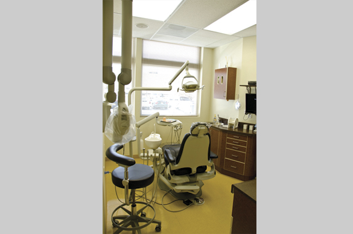

Hours are taken from the existing Hamilton Square Dental website. Saturday availability notes that the first Saturday of the month is closed.
Monday
9 AM - 6 PM
Tuesday
9 AM - 8 PM
Wednesday
9 AM - 3 PM
Thursday
9 AM - 6 PM
Friday
Closed
Saturday
9 AM - 2 PM, first Saturday closed
Sunday
Closed

The office tour describes a welcoming reception room and modern clinical spaces.
Common Questions
Helpful basics from the existing FAQ.
The brand of the toothbrush is not as critical as the type of bristle and the size of the head. A soft toothbrush with a small head is recommended because medium and hard brushes tend to cause irritation and contribute to recession of the gums, and a small head allows you to get around each tooth more completely and is less likely to injure your gums. It's unnecessary to "scrub" the teeth as long as you are brushing at least twice a day and visiting your dentist at least twice a year for cleanings.
Generally, no. However, it's advisable to use a fluoride containing toothpaste to decrease the incidence of dental decay. We recommend our patients use what tastes good to them as long as it contains fluoride.
Flossing of the teeth once per day helps to prevent cavities from forming between the teeth where your toothbrush can't reach. Flossing also helps to keep your gums healthy.
These are restorations to repair a severely broken tooth by covering all or most of the tooth after removing old fillings, fractured tooth structure, and all decay. The restoration material is made of gold, porcelain, composites, or even stainless steel. Dentists refer to all of these restorations as "crowns". However, patients often refer to the tooth-colored ones as "caps" and the gold or stainless steel ones as "crowns".
Both bridges and partial dentures replace missing teeth. A bridge is permanently attached to abutment teeth or, in some cases, implants. A partial denture is attached by clasps to the teeth and is easily removed by the patient. Patients are usually more satisfied with bridges than with partial dentures.
Although the U.S. Public Health Service issued a report in 1993 stating there is no health reason not to use amalgam (silver fillings), more patients today are requesting "white" or tooth-colored composite fillings. We also prefer tooth-colored fillings because they "bond" to the tooth structure and therefore help strengthen a tooth weakened by decay. While fillings are also usually less sensitive to temperature, and they also look better. However, "white" fillings cannot be used in every situation, and if a tooth is very badly broken-down, a crown will usually be necessary and provide better overall satisfaction for the patient.
No. While most teeth which have had root canal treatments do need crowns to strengthen the teeth and to return the teeth to normal form and function, not every tooth needing a crown also needs to have a root canal.